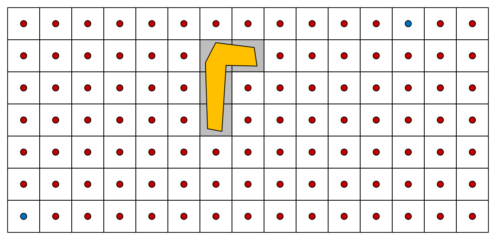
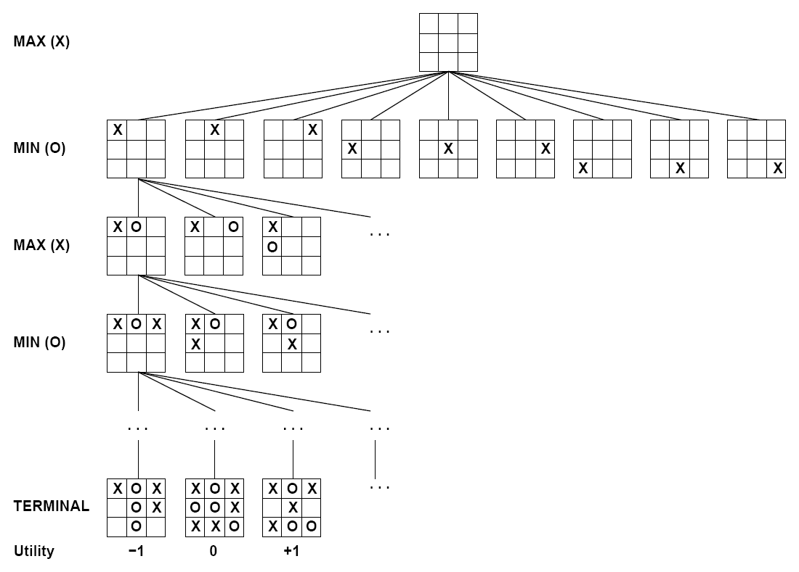
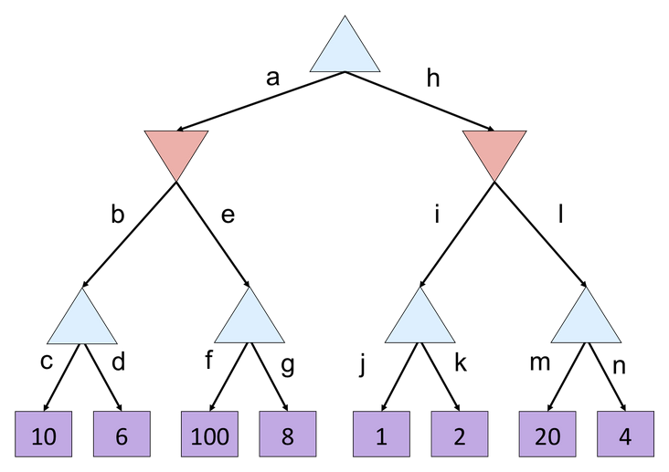
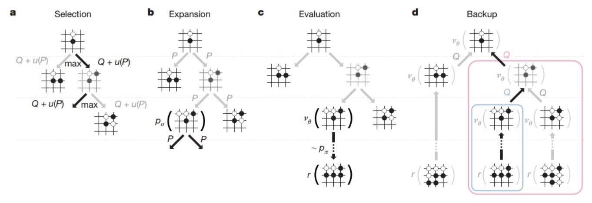

Search
1.1 Single-Agent Search
1.1.1 Formulation and Search Strategies
- Search problem: State space \(S\), start \(s_{\mathrm{start}}\), \(\operatorname{Actions}(s)\), successor \(\operatorname{Succ}(s,a)\), \(\operatorname{Cost}(s,a)\), and goal test \(\operatorname{IsEnd}(s)\); find a minimum-cost action plan to a goal.
- Fringe priority (\(g(n)\): backward path cost; \(h(n)\): estimated forward cost to goal):
| Method | Priority | Optimal? | Note |
|---|---|---|---|
| UCS | \(g(n)\) | Yes (\(\text{cost} \ge 0\)) | Explores uniform cost contours (\(h=0\)) |
| Greedy | \(h(n)\) | No | Myopic forward estimate only |
| A* | \(f(n) = g(n) + h(n)\) | Yes (admissible / consistent \(h\)) | Optimal efficiency among exact methods |
- Goal-test rule: Stop only when a goal is popped for expansion, never when first pushed onto the fringe.
1.1.2 A* Tree Search vs. Graph Search
Definition 1.1 (Admissible and Consistent Heuristics)
- Admissible (optimistic): \(0 \le h(n) \le h^*(n)\), where \(h^*(n)\) is true minimum cost to a goal.
- Consistent (triangle inequality): \(h(n) \le \operatorname{cost}(n \to n') + h(n')\) for every arc \(n \to n'\).
- A* tree-search optimality: For optimal goal \(A\) and suboptimal goal \(B\), any unexpanded ancestor \(n\) of \(A\) satisfies \(f(n) \le g(A) < g(B) = f(B)\), so \(A\) is expanded before \(B\).
- Graph search: Maintain a closed set (hash/tree set) of expanded states to avoid exponential repeated-state work.
- Why consistency matters:
- Implies admissibility, and forces non-decreasing \(f(n') \ge f(n)\) along paths.
- Guarantees A* graph search expands every state along an optimal path first.
- Relaxed-problem heuristics: Exact optimal cost \(h(s) = \operatorname{FutureCost}^j(s)\) in a relaxed problem (\(\operatorname{Cost}^j \le \operatorname{Cost}\), e.g., Manhattan distance) is automatically consistent; if \(h_1, h_2\) are consistent, so is \(\max\{h_1, h_2\}\).
1.1.3 Motion Planning Variants
- Cell decomposition: Partition space into free, obstacle, and mixed cells; search free cells and recursively split mixed cells.
- Visibility graph: Connect mutually visible polygonal obstacle vertices (\(O(n^2)\) edges) to find exact Euclidean shortest paths.
- Weighted A*: Priority \(f(s) = g(s) + \varepsilon h(s)\) (\(\varepsilon > 1\)) gives large speedups with \(\varepsilon\)-suboptimal cost (\(\le \varepsilon \cdot \text{opt}\)).
- Hybrid A*: Searches \((x, y, \theta)\) grid cells using continuous kinematically feasible motion primitives \(s' = F(s, u)\).

1.2 Adversarial Search and Game Theory
1.2.1 Minimax and Alpha-Beta Pruning
- Turn-based game: States \(S\), players \(P\), actions \(A\), transition \(S \times A \to S\), terminal test, and utilities (zero-sum: \(u_2 = -u_1\); general-sum: independent payoffs). Solution is a policy \(\pi: S \to A\).
- Minimax (2-player zero-sum): MAX maximizes \(\max_{s'} V(s')\), MIN minimizes \(\min_{s'} V(s')\); takes \(O(b^m)\) time and \(O(bm)\) space.

- Alpha-Beta pruning: Track \(\alpha\) (best value MAX can guarantee on path) and \(\beta\) (best value MIN can guarantee); prune remaining children whenever \(v \ge \beta\) at MAX or \(v \le \alpha\) at MIN, preserving exact root value:
def max_value(s, alpha, beta):
if is_terminal(s): return utility(s)
v = -inf
for s_next in successors(s):
v = max(v, min_value(s_next, alpha, beta))
if v >= beta: return v
alpha = max(alpha, v)
return v- Move ordering & cutoffs:
- Perfect move ordering cuts time from \(O(b^m)\) to \(O(b^{m/2})\) (doubles solvable depth).
- Depth-limited minimax: Combine iterative deepening with a linear feature evaluation \(\operatorname{Eval}(s) = \sum_i w_i f_i(s)\) at cutoff leaves.

1.2.2 Normal-Form Games and Nash Equilibrium
- Strategies: Pure strategy picks one action deterministically; mixed strategy randomizes over actions. Player \(i\)’s best response is \(\operatorname{BR}_i(s_{-i}) = \arg\max_{s_i} u_i(s_i, s_{-i})\).
Definition 1.2 (Nash Equilibrium) Profile \(s^* = (s_1^*, \dots, s_N^*)\) is a Nash equilibrium if \(s_i^* \in \operatorname{BR}_i(s_{-i}^*)\) for all \(i\) (no profitable unilateral deviation):
\[ \forall\,i,\, s_i: \quad u_i(s_i^*, s_{-i}^*) \ge u_i(s_i, s_{-i}^*). \]
- Computing NE: Find mutual best-response cells, eliminate strictly dominated strategies, or use the indifference principle—every pure action in the support of a mixed NE yields equal expected payoff (e.g., \((\frac13,\frac13,\frac13)\) in Rock–Paper–Scissors).
Theorem 1.1 (Nash Existence & von Neumann Minimax)
- Nash (1950): Every finite game (finitely many players and actions) has at least one pure or mixed Nash equilibrium.
- von Neumann: In any finite two-player zero-sum game, \(\max_{\sigma_1}\min_{\sigma_2} u(\sigma_1,\sigma_2) = \min_{\sigma_2}\max_{\sigma_1} u(\sigma_1,\sigma_2) = v\) (NE coincides with Minimax).
1.2.3 Monte Carlo Tree Search (MCTS)
For high-branching games (\(b \approx 361\) in Go), MCTS grows an asymmetric tree online via four steps per iteration:
Selection: Traverse from root via tree policy (UCT) to an expandable node:
\[ \operatorname{UCT}_j = \overline{X}_j + 2 C_p \sqrt{\frac{2\ln n}{n_j}} \qquad (n_j = 0 \implies \infty). \]
Expansion: Add unvisited child node(s).
Simulation: Roll out from the new node to termination using a fast default policy.
Backpropagation: Update visit counts \(n_j\) and win rates \(\overline{X}_j\) along the visited path.
- Decision & AlphaGo: Final root move uses Max (highest \(\overline{X}_j\)), Robust (highest \(n_j\)), or Max-Robust child. Vanilla MCTS is anytime and domain-agnostic but can miss narrow traps; AlphaGo guides expansion and evaluation with policy nets (\(p_\sigma, p_\pi, p_\rho\)) and a value net \(v_\theta\).

1.2.4 Expected Utility and Rationality
- Cardinal vs. ordinal utility: Minimax is invariant to any monotonic transform of utilities; stochastic expectation requires cardinal utilities (invariant only up to positive affine transforms).
- Rationality axioms on lotteries \(L = [p, A;\, 1-p, B]\): Orderability, Transitivity (violating it creates a “money pump”), Continuity, Substitutability, and Monotonicity.
- Ramsey / vNM Theorem: Preferences obeying the five axioms admit a utility \(U\) with \(A \succeq B \iff U(A) \ge U(B)\) and \(U([p_1, S_1; \dots; p_n, S_n]) = \sum_i p_i U(S_i)\) (Maximum Expected Utility).
- Risk preferences: Concave \(U(\text{money})\) implies risk aversion (\(U(L) < U(\operatorname{EMV}(L))\), motivating insurance premiums); human choices systematically violate vNM independence under certainty effects (Allais paradox).